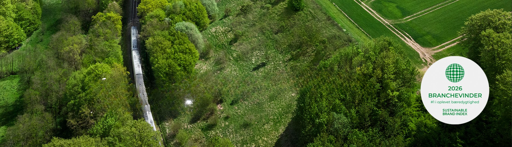

Hver dag kører tusindvis af mennesker fra forstæderne til København i bil. Men toget er ofte et hurtigere, nemmere og langt mere klimavenligt valg.
Drop bilen. Tag toget.
Planlæg din rejse med DSBMange pendlere vælger stadig bilen til arbejde. Men toget giver både mindre CO₂-udledning, mindre stress og en mere bæredygtig hverdag.
Når du tager toget kan du:
En gennemsnitlig bil udleder cirka 99 g CO₂ pr. personkilometer, mens et elektrisk tog kun udleder omkring 9 g CO₂ pr. personkilometer. Det betyder, at toget kan udlede op til 10 gange mindre CO₂ end bilen.
Hvis en pendler skifter bilen ud med toget, kan det spare op til 1 ton CO₂ om året.
DSB arbejder på at blive CO₂-neutral i 2030 og reducere sin klimapåvirkning med 98 % sammenlignet med 2019.
Toget er en af de mest klimavenlige transportformer.
Hyppige afgange gør det nemt at planlægge hverdagen.
DSB forbinder byer og forstæder hurtigt og effektivt.
Togtransport er en sikker og stabil måde at rejse på.
Hver gang du vælger toget frem for bilen, bidrager du til mindre CO₂, mindre trafik og en grønnere fremtid.
Tag toget med DSB